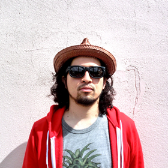

ARTIST
-
サイトウ“JxJx”ジュン
-
DJ WILD PARTY
-
Eccy
-
fusex
-
yamanta
サイトウ“JxJx”ジュン

サイトウ“JxJx”ジュン
激烈で雑多なダンスミュージックを無礼講な演奏でフロアとお茶の間に投下しまくる6人組、YOUR SONG IS GOODのオルガン／ヴォーカル／リーダー担当。 ライブハウス、クラブからはじまり大型野外フェスの超巨大ステージまで関係ナシで踊らせ倒す。
現在放送中スペースシャワーTV『スペシャエリア』メインVJ、その他文筆、DJ、 REMIX、舞台音楽、トークライブなど多方面で混乱を極める毎日。
好きな漫画は宮下あきら著『激！極虎一家』。好きな場所はハワイ。カクバリズム所属。
DJ WILD PARTY
18歳でキャリアをスタート。 DOMMUNE出演時に、エレクトロ、ヒップホップ、アイドルポップ、アニソン、ゲーム音楽、ブレイクコア、歌謡まで貪り尽くすウルトラ・ボーダーレスなDJを披露し一躍注目を集める。
今年に入り自身の初メジャーリリースとなる『MOGRA MIX VOL.1 mixed by DJWILDPARTY』をEMIよりリリースする他、LAで開催されたANIME EXPOや香港での公演、OL Killerとしてフジロックに出演するなど、新しいジャパン・ カルチャーの伝道師になることが期待される超新世代 DJ。
Eccy
Eccy（エクシー）：1985年生まれ、東京育ち。
07年10月、Shing02をフィーチャーしたデビューシングル『Ultimate High』でHip Hopシーンに新しい感性で切り込み、デビューアルバム『Floating Like Incense』が新人としては異例のセールスをあげシーンにその地位を確立。08年には環ROYとのコラボレーションアルバム『more?』をリリース、また自身の レーベルであるSlye RecordsのMC、haiiro de rossiやオロカモノポテチのアルバムに楽曲を提供し、またFuji Rock07、08、09へ出演するなど大きくステップアップ。
09年にはtoe柏倉やdry&heavyのMaster Pataなどを起用しACOなどをフィーチャーした実験作『Narcotic Perfumer』をリリースすることで彼のもつ独自のサウンドをさらに進化させ、2ndアルバム『Blood The Wave』をリリース、Flying LoutsやMadlibなどのサウンドに刺激されつつ、さらに彼独自のHip Hop感を全面に押し出したサウンドとなっている。
P-Vineから発売された『Loovia Mythos』収録曲はRas GのBTS radio mixでも使用された。Low End Theory Podcastでも曲が取り上げられるなど、活躍の場を世界に広げている。2009年後半にヨーロッパで本格的dance musicを体験。2010年10月に初のmix CD”Shambler From The Stars”を発売し、 2011年4月にSam Tiba & Myd(Club Cheval),Subeena(Planet Mu)をリミキサーに迎えた『Flavor Of Vice EP』を発売。2012年はスペインのエレクトロニックミュージックの祭典Sonar Festivalの日本版SonarSound Tokyoに出演。これまでの共演者は、DJ Krush、Modeselektor、Hudson Mohawke(Warp/LuckyMe)、Zinc、Untold、Bok Bok(Night Slugs)、Jamie xx(The xx)、Girl Unit(Night Slugs)など多数。
fusex
『PFM SQUAD』所属。
perfumeを中心としたアイドル、パチンコ、パチスロ、麻雀、ラーメン二郎、野球、プロレス、風俗などの情報を交換しあいながら高円寺ONEにて不定期にイベントを開催。
日暮里、北千住、板橋などのホール系強めイベントに朝一から参加。設定変更高確状態の挙動判別と立ち回りには定評がある。
昨今の「和モノ/J-POP」から「emo/HC/punk」まで自分の血肉である音楽をつないでつないでひとつの物語にします。
★レギュラーパーティー★w/Shink,Psychesayboom!!!,kard
『インフォオグリ』(毎月最終金曜日@高円寺ONE）(#inguri)
yamanta
yamanta (ISOLATED DISCO,CultCrew)
東京での学生生活ののちにうっかり迷い込んだ魔窟・Rajishanにて静岡地下シーンの洗礼を受け、気づいたらDJブースに立たされていた２７歳未婚。
静岡若手DJの最右翼として日々死線を越える傍ら、文筆家とのトークライブやハーフパイプデモの選曲担当など多岐にわたる活動を展開中。
原初的なダンスへの欲求を現代のフロアに転写することを至上命題とし、湿り気を帯びたディープ～テックハウスを軸に叙情的な美しさとトライバルな暴力性を織り交ぜたプレイを追求している。
http://yamanta-cultcrew.blogspot.jp/
http://www.mixcloud.com/yamanta/
and more!!!